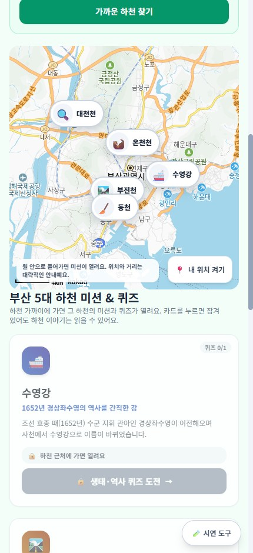
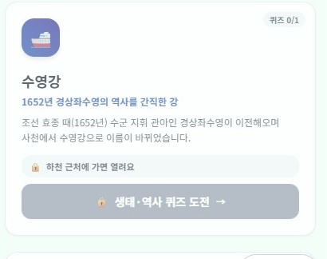
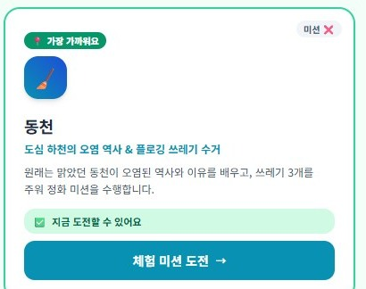
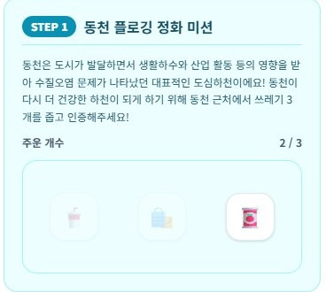
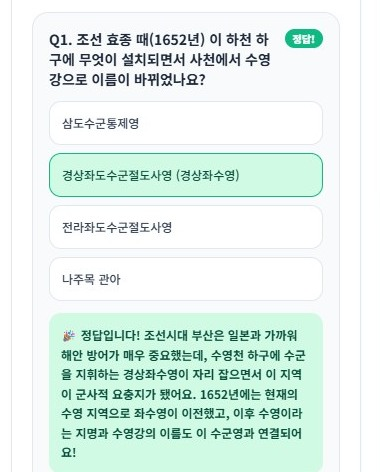
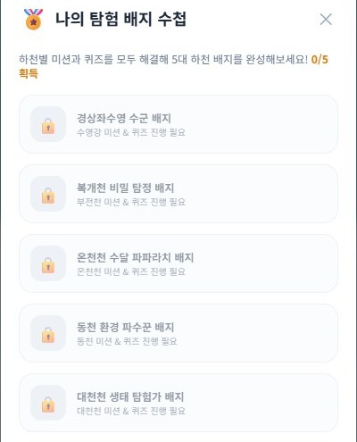
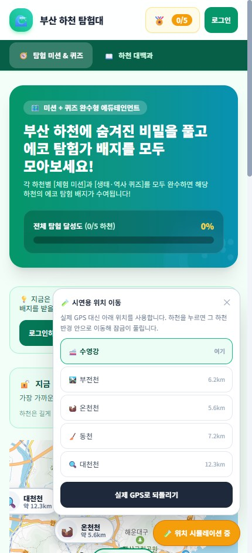
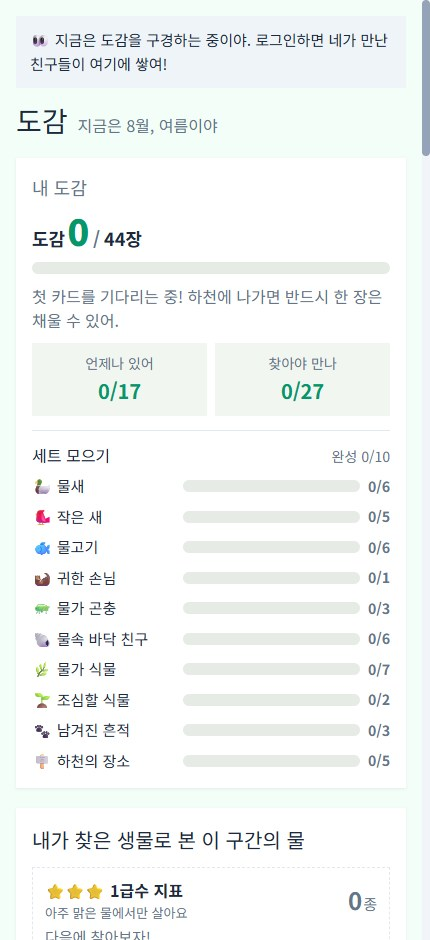

아이들이 뛰어노는 생태 하천 만들겠다는 공약
그 점에 착안
부산 5대 하천을 가족이 함께 걷는 모바일 웹앱
React 18 + TypeScript + Vite · Supabase · 카카오 지도 · Vercel
설치·회원가입 없이 링크 하나로 시작
발표자 · 팀명 · 데모 URL — 발표 전에 채워 주세요
잠긴 하천도 역사·생태 이야기는 열려 있습니다. 잠기는 것은 미션과 퀴즈뿐입니다.

링크 하나로 바로 시작합니다.


밖이면 약 1.9km 더 가야 해요. 오차 300m 를 넘으면 거리를 말하지 않습니다.

하천의 역사와 미션이 붙어 있습니다.

해설은 정답에게도, 오답에게도 열립니다.

하천 5개 = 배지 5개.

주소 끝에 ?demo=1
| 하천 | 체험 미션 | 퀴즈 |
|---|---|---|
| 수영강 | 없음 | 1문항 |
| 부전천 | 없음 | 1문항 |
| 온천천 | tap_target | 1문항 |
| 동천 | collect | 0문항 |
| 대천천 | observe_log | 1문항 |
누락이 아니라 확정된 콘텐츠입니다. 완수를 “미션 AND 전 퀴즈”로 두면 배지 3개는 영원히 지급 불가가 됩니다 — 에러도 없이. 없는 단계는 통과 처리합니다.
하천마다 렌더 함수 하나씩
→ 6번째 하천 = 코드 추가 + 재배포
mission_kind ENUM + mission_config JSONB
→ 6번째 하천 = DB 행 하나
목표 3개 줍기
대상 촬영
관찰일지 4칸
5종 모두 구현돼 있고, 지금 배치된 것은 3종입니다.
순서가 핵심입니다. 서버 도착 후 지우면 이미 촬영 좌표를 수신한 것이 됩니다.
문구가 슬그머니 되살아나지 않도록 테스트로 고정해 뒀습니다.
잔액 컬럼이 없습니다. 잔액은 SUM(delta).
수정·삭제 대신 반대 부호의 보정 행을 넣습니다.
claim_river_badge 가 DB에서 재집계한 뒤에야 지급합니다.
“다 했어요”라고 주장하는 경로가 없습니다.
개발자도구로 우회 가능합니다.
아는 것은 기기가 스스로 보고한 위치뿐입니다.
마이그레이션 17개 · RLS 정책 35개 · 하천 5개 · 종 44개
E2E 는 실제 Supabase에 붙고 RLS 를 우회하지 않습니다. 여기서 막히면 브라우저에서도 막힙니다.
DEFINER 는 실행 주체를 함수 소유자로 바꿉니다 — 함수 안에서는 언제나 postgres.
조건이 항상 거짓이라 자가 승격이 그대로 통과했습니다.
오류도 로그도 없어서 스키마만 읽으면 “보호되고 있다”고 보입니다.
E2E 에서 실제로 승격에 성공해 발견했고, INSERT 정책과 트리거 두 경로 모두 막았습니다. (0012)
미로그인 호출이 “0행”이 아니라 permission denied 로 터졌습니다.
해법은 인자 없는 최소 DEFINER 헬퍼 — auth.uid() 만 보면 남의 상태를 물어볼 방법이 없습니다. (0011 · 0014)
좌표 자리표시자가 거리 계산에 섞여 “약 9,700km 더 가야 해요” 가 떴습니다.
에러가 아니라 그럴듯한 오답이라 더 위험합니다. DB 제약으로 막았습니다. (0016)
온보딩 판정이 users 행만 보고 consent_id 를 안 봤습니다. 화면은 정상, 기록만 조용히 사라짐.
INITIAL_SESSION 이 즉시 발화해 queryClient.clear() 가 실행됐습니다. 비워야 하는 건 로그아웃 때뿐.
디자인 토큰 9종 소실 + Tailwind preflight. 둘 중 하나만 있었으면 드러나지 않았을 문제였고, 영향은 13개 파일.
현장 답사를 하지 않았습니다.
하천은 선인데 점 하나 + 반경으로 근사 중입니다.
개발자도구로 우회 가능합니다.
해금은 아직 아무 기록도 남기지 않습니다.
classify Edge Function 은 작성만 되어 있습니다.
배포·실행된 적이 없고 데모에서 동작하지 않습니다.
DB 쪽 삭제는 가능하지만 앱 안에 경로가 없습니다.

이미지 파이프라인은 테스트로 덮여 있지만, 실기기 카메라로는 확인하지 않았습니다.
동작하지만 홈 흐름에 연결돼 있지 않습니다. /dex 로만 접근합니다.
일정 단축을 위해 0010 에서 방침을 바꿨습니다. 보관 기간·파기 절차가 아직 없습니다.
· 현장 답사로 좌표 실측
· 지오펜스를 LineString 으로 — 함수는 안 고쳐도 됩니다
· 좌표 보관·파기 절차 확정
· 잠금 판정을 서버로 이동
· 동의 철회 · 계정 삭제 화면
· 실기기 카메라 미션 검증
· classify 실제 배포
· 도감 44종을 메인 흐름에 연결
· 생태 자문으로 서식종 검증
· 가족 파일럿에서 “빈손 이탈률” 계측
데모 URL · 저장소 주소 · 연락처 — 발표 전에 채워 주세요